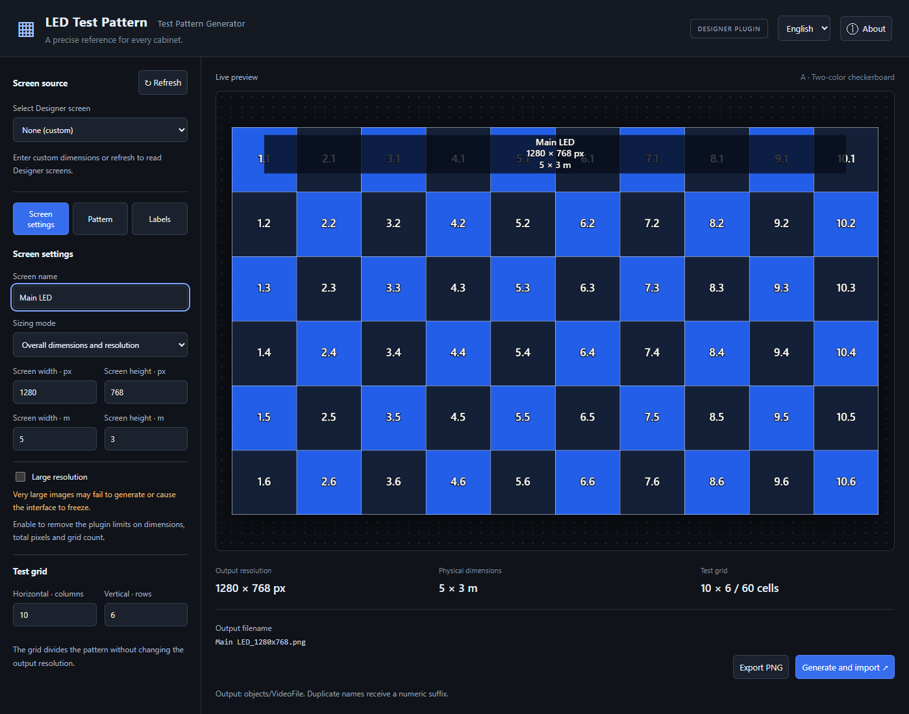
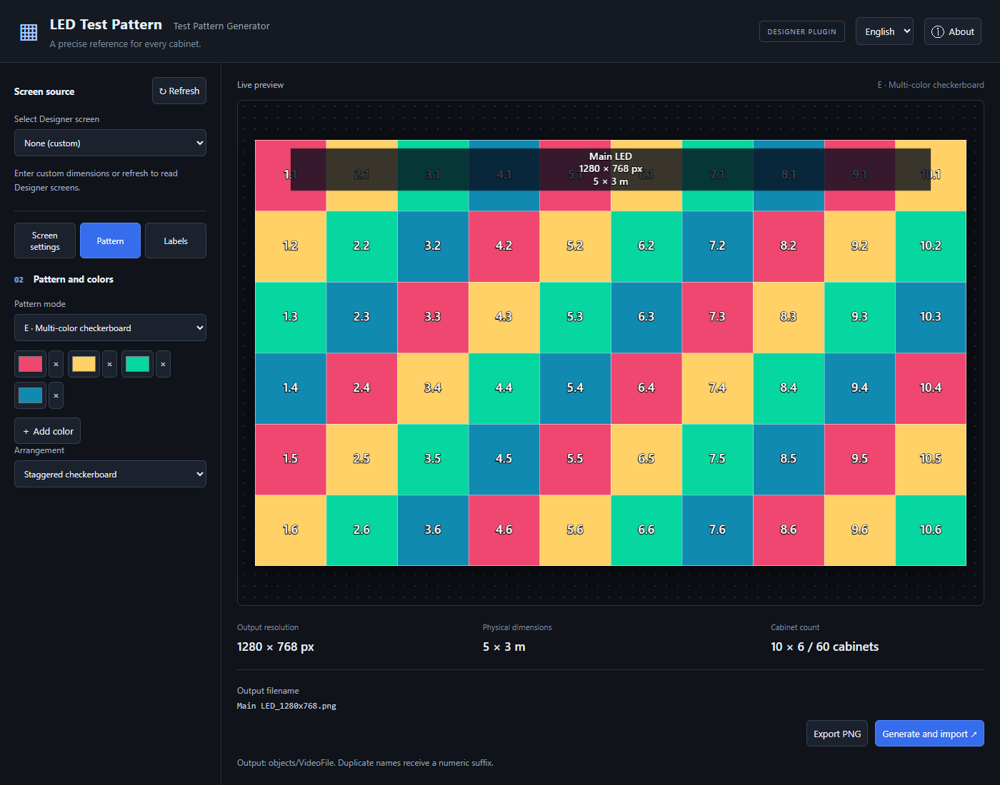
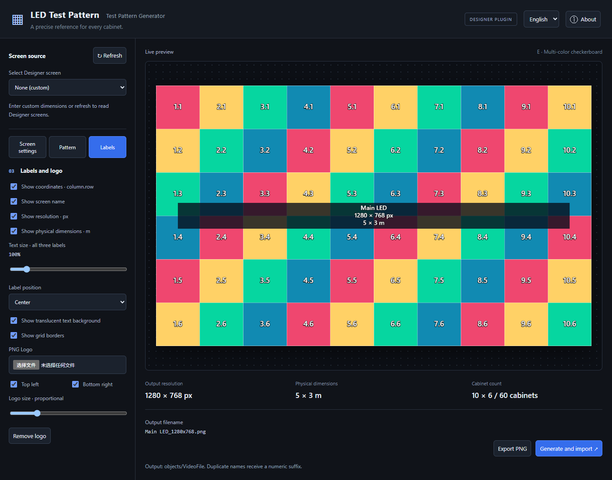

DISGUISE DESIGNER PLUGIN · DOCUMENTATION
LED Test Pattern
V1.4 · Designer r32+ · Author: Disguise 张岳
Create pixel-accurate test patterns for LED screens and projection surfaces inside Disguise Designer. Preview your pattern, export a PNG, or import it directly into the current project. No separate Python or Node.js installation is required.

Actual plugin interface in browser preview. Screenshots use custom settings; they do not demonstrate a live Designer connection.
Quick start
- Copy the complete
LED_Test_Pattern folder into your Designer project's plugins folder. - Open LED Test Pattern from the Designer Plugins panel.
- Select None (custom) or click Refresh and choose a Designer screen.
- Check the screen name, pixel resolution and physical dimensions.
- Choose a pattern and configure labels or a PNG logo.
- Click Export PNG or Generate and import ↗.
Installation and updates
Keep all plugin files together. The project structure should look like this:
Your project/
├── objects/
├── plugins/
│ └── LED_Test_Pattern/
│ ├── index.html
│ ├── app.js
│ ├── core.js
│ ├── bridge.js
│ ├── keyboard.js
│ ├── language.js
│ ├── style.css
│ └── icon.svg
└── Your project file
To update, replace the plugin folder and close and reopen the plugin. If it is not listed, reopen the Plugins panel; restart the project if necessary.
The interface defaults to English. Use the English / 中文 selector in the top bar to change language. Your selection is saved locally. Screen names are preserved in their original language.
1. Choose a screen source
Click Refresh to read LED Screens and Projection Surfaces from the connected Designer project. Select a screen to populate the available name, resolution and physical dimensions.
The selected-screen message is deliberately brief:
Loaded LED screen: Main LED
Loaded Projection surface: Front projection
Choose None (custom) to enter your own settings. Refreshing the list preserves edited values; selecting a screen again fills its settings again.
Check imported values before generating. Physical dimensions that cannot be determined reliably are left blank, and the physical-dimensions label is disabled. Enter the dimensions manually and re-enable the label if needed. Automatic cabinet layout is used only when the available data supports it.
The current reader supports LED Screens and Projection Surfaces. DMX Screen discovery is not implemented in this release. Selecting a source does not modify Designer geometry, mapping or the timeline. Reopening the plugin restores settings with None (custom) selected.
2. Set resolution and dimensions
Overall dimensions and resolution
Enter the output width and height in pixels, then the physical width and height in meters. Set the number of test-grid columns and rows separately. The grid divides the pattern without changing its output resolution.
Unknown physical dimensions may remain blank when Show physical dimensions · m is disabled. Columns and rows must not exceed the pixel width and height. If grid divisions do not divide the resolution evenly, cells may differ by one pixel.
Calculate from LED cabinets
Enter the width and height of one cabinet in millimeters, its width and height in pixels, and the horizontal and vertical cabinet counts.
| Setting | Example |
|---|
| Cabinet dimensions | 500 × 500 mm |
| Cabinet resolution | 128 × 128 px |
| Columns × rows | 10 × 6 |
| Calculated output | 1280 × 768 px |
| Calculated physical dimensions | 5 × 3 m |
Output width = cabinet pixel width × columns. Output height = cabinet pixel height × rows. Physical dimensions use the same calculation, converting millimeters to meters.
3. Choose a pattern
Open the Pattern tab.

| Mode | Controls and behavior |
|---|
| A · Two-color checkerboard | Two color pickers; colors alternate across the grid. |
| B · Full-screen gradient | Horizontal, vertical or diagonal gradient across the screen. |
| C · Per-cell gradient | Gradient repeats inside each cell; optionally reverse adjacent cells. |
| D · Custom image | Upload PNG, JPEG or WebP; cover the screen or repeat in each cell. |
| E · Multi-color checkerboard | Use 2–12 colors, staggered or cycling by column or row. |
For custom images, choose Crop to fill, Fit (black bars) or Stretch. Stretching may distort the source image's proportions.
Open the Labels tab.

- Toggle coordinates, grid borders, screen name, pixel resolution and physical dimensions independently.
- Coordinates use column.row, starting with 1.1 at the top-left cell.
- Text size · all three labels scales the screen name, resolution and dimensions together from 50% to 600%.
- Place these labels at Top center, Center or Bottom center.
- Toggle the translucent text background independently.
- Upload a PNG logo and enable the top-left and/or bottom-right placement.
- Adjust logo size proportionally with the 3–50% slider. Transparent PNGs are recommended.
Check the preview after increasing text or logo size, especially with long screen names. These elements may cover grid detail.
5. Export or import
Export PNG generates the full-resolution image for download. The preview is scaled down; the exported PNG uses the configured pixel dimensions.
Generate and import ↗ writes the PNG to the connected Designer project's:
objects/VideoFile
Filenames include the screen name and resolution:
Main LED_1280x768.png
Main LED_1280x768_2.png
Existing files are not overwritten; duplicate names receive a numeric suffix. Characters that are invalid in Windows filenames are replaced with underscores. Wait for Designer to scan the media before selecting the image. The plugin does not automatically add it to the timeline.
Large-resolution output
Normal limits are 16384 px per side, 32MP total (33,554,432 pixels) and 20,000 cells. Enable Large resolution to remove these three plugin limits.
Very large images may fail to generate or freeze the interface. Actual capacity depends on the embedded browser and available memory. Verify the pattern at a smaller size before attempting a large export. This switch does not remove upload or PNG import limits.
| Limit | Maximum |
|---|
| Uploaded image file | 32 MB |
| Decoded uploaded image | 64MP (67,108,864 pixels) |
| Generated PNG imported into Designer | 64 MB |
Saved settings
Settings, colors and language preference are stored locally in the browser. Uploaded backgrounds and logos are not retained after reopening: select those files again. Browser storage cleanup may reset saved preferences.
Troubleshooting and precautions
| Symptom | What to check |
|---|
| No screens appear | Confirm Designer is running and its API is reachable; click Refresh. Use None (custom) to continue manually. |
| Physical dimensions are blank | The model may not expose reliable rectangular dimensions. Enter verified dimensions manually. |
| Export/import is disabled | Check the validation message, positive integer resolution/grid values, and required dimensions or background image. |
| Resolution exceeds normal limits | Reduce the settings or enable Large resolution after considering memory usage. |
| Large PNG fails | Reduce resolution or simplify the image; check the 64 MB import limit. |
| Import times out | Check objects/VideoFile before retrying: a timeout does not necessarily mean the write failed. |
| Project has changed | Refresh screen sources and select the intended screen again before importing. |
| Logo or background is missing after reopening | Upload it again; image files are not persisted. |
Interrupted imports may leave .ledtest_*.part temporary files in the output folder. Remove them manually only after confirming that no import is in progress.
Physical dimensions are used for calculation and labels; they do not resize Designer screen geometry. The plugin writes image files but does not create screens or change playback.
About
Use About in the top bar to view the version, author and release history.
Version: V1.4
Author: Disguise 张岳
Target environment: Designer r32+ plugin framework
This is a custom tool, not an official Disguise release.